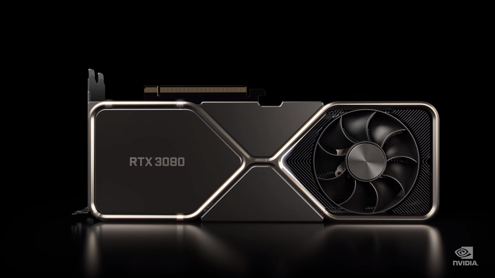

Lab 18: Responsive Design
The purpose of this lab is to create a responsive design.
Challenges
Results
Jeremy's Cool List of Cool Things He Wants To Waste His Money On.
Hey, have you ever wanted to see if Jeremy was financially intelligent? Spoiler alert, he is not. Scroll down to see the stuff that Jeremy has his eyes on; things he wants to buy in the future.
The first thing on Jeremy's list of things he wants to buy is a graphics card.
There is a problem, though... Jeremy has to choose. And quite frankly, at face value, there is literally no reason why he should be debating on which graphics card to get. The two graphics cards that Jeremy is debating on are the NVIDIA RTX 3080/90, or the Radeon RX6900.
Let's weigh them against one another shall we? In terms of power, the RX6900 has been impressive, beating out the 3080 and 3090 cards in many games. And for less! The RX6900, the top of the line flagship from AMD, is $1,000. The 3090? $1,500. For a card that performs worse sometimes, that $500 difference becomes a much bigger factor.
Do the RTX cards come with any advantages? Uh yeah, they're from NVIDIA. This is where I start to get in my Apple fan mindset, a little. See, an Android phone could come out tomorrow that promises to give you instant downloads and super fast speed and whatever, but if it's not an Apple? It's gonna be a hard sell. And for me personally, the biggest reason as to why I stick to Apple stuff is because I'm so integrated into that ecosystem. My photos are in the Apple cloud system. My notes are in the Apple cloud system. My friends... Well, my friends would bully me if I were to ever turn green text. What I'm trying to say is, NVIDIA is that ecosystem for my PC. I utilize their RTX Voice feature, A LOT, their GeForce Experience, ALOT, tools like Ansel, Shadowplay, things that I utilize almost daily. And with the rise of DLSS, NVIDIA's really amazing supersampling technology, it's gonna be really hard to depart from NVIDIA unless AMD can really twist my arm.
Of course, at the end of the day, you're comparing a speed of 200 frames per second to 190... Truth be told, I'll be okay, no matter which card I buy. The only thing I have to determine is how much I want to spend for all that gamer goodness.
This is the Radeon RX6900. It comes in at a very cool, $1,000. This is a lot of gaming power.
This is the RTX 3080. This particular model comes in at $700, and from what we've seen it is indeed weaker than the 6900, and even the step down 6800. But, do the frames tell the whole story? We shall see.